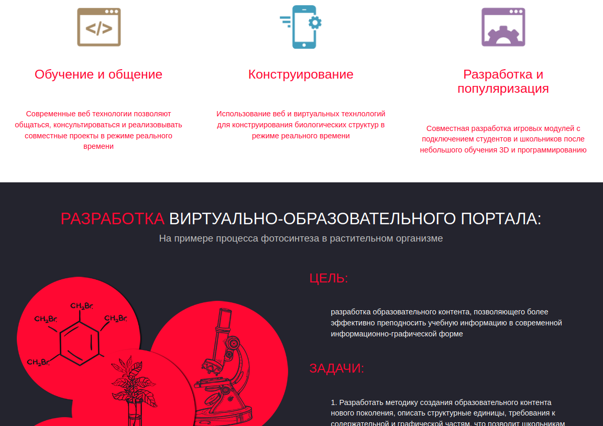
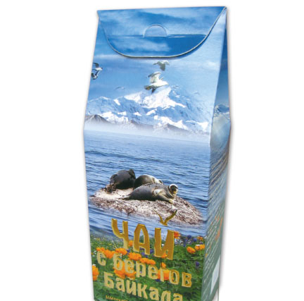

Maintenance Schedule

График превентивного технического обслуживания
Проект для мониторинга сатуса ТО и аналитики затрат на ежегодное обслуживание
Образовательный проект Подсолнух
Разработка виртуально-образовательного портала на примере процесса фотосинтеза в растительном организме
Магазин виртуальной реальности

Учебный проект интернет магазина оборудования для виртуальной реальности
Магазин Байкальского чая
E-commerce Магазин Байкальского чая, проект для изучения JavaScript